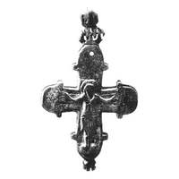
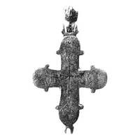

Catalog › CE-1057 · KOR2003-III.1.2.3
Encolpion întreg cu Răstignire și adstanți nielați pe față, cruce cu opt brațe și medalioane pe revers
sec. XII–XIII (1101–1300) · Pekari (Kniaja Gora), ținutul Kaniv, gubernia Kiev, Ucraina · Muzeul-rezervație Kiev-Pecerska Lavra, Kiev, inv. КПЛ-М-6869 (2179, 19338, 831)
double-sided reliquary cross (enkolpion), aramă; c. XII–XIII (1101–1300); found at Pekari (Kniaja Gora), ținutul Kaniv, gubernia Kiev, Ucraina; kept at Muzeul-rezervație Kiev-Pecerska Lavra, Kiev.




Identificare
- Categorie
- Encolpion bivalv (relicvar)
- Material
- Aramă
- Tehnică
- Turnare în relief; Gravare (incizie); Niello
- Stare
- Întreagă
- Dimensiuni
- Î 97 × L 67 × Gr 10 mm
Iconografie
- Avers
- Sf. Ioan
- Descriere avers
- Imagine centrală în relief a Răstignirii, completată cu imagini nielate, prost conservate, ale adstanților Maica Domnului și Ioan Teologul pe capetele laterale; deasupra Răstignirii imaginea nu s-a păstrat (sau nu a existat de la început). Pe capătul de sus al valvei, orificiu trecător (în inventarul muzeului figurează și un inel de agățare în formă de butoi).
- Descriere revers
- Potrivit inventarului muzeului: imagine nielată a unei cruci cu opt brațe în centru și patru sfinți în medalioane. Potrivit articolului lui E. I. Mișneva, în locul imaginilor de sfinți din medalioane sunt inscripții.
- Inscripții
- IC XC NH KA (revers, după E. I. Mișneva)
- Limba
- Greacă
Datare și atribuire
- Datare
- sec. XII–XIII (1101–1300)
- Centru
- Necunoscut
- Tipologie
- Korzukhina–Peskova 2003, tip III 1 2
Descoperire
- Localitate
- Pekari (Kniaja Gora)
- Regiune
- ținutul Kaniv, gubernia Kiev
- Țară
- Ucraina
- Context
- Necunoscut
- Anul
- 1890
Păstrare și referințe
- Colecție
- Muzeul-rezervație Kiev-Pecerska Lavra, Kiev
- Nr. inventar
- КПЛ-М-6869 (2179, 19338, 831)
- Bibliografie
- G. F. Korzukhina, A. A. Peskova, Древнерусские энколпионы. Нагрудные кресты-реликварии XI–XIII вв., Sankt-Petersburg, 2003 [Korzukhina–Peskova 2003], p. 110, cat. nr. III 1 2/3, reprodusă la Табл. 59 (planșe, p. 301). Bibliografie citată în sursă: Леопардов 1890, табл. II–III, 15; Петров 1897, 250, № 325; Петров 1915, 29, табл. XVI, 8–9 (на табл.) (в тексте идет под номерами 6, 7); Мишнева 1995, 342–343; Корзухина, архив ф. 77, д. 15, л. 44.
- Figura
- Табл. 59
- Planșe
- Korzukhina–Peskova 2003, Табл. 59 (planșă fără paginație proprie în PDF; p. 301 tipărită)
- Observații
- Datare după Peskova: sec. XII–XIII. Circumstanțe: Descoperit în 1890. Proveniență în colecție: din colecția Muzeului Bisericesc-Arheologic de pe lângă Academia Teologică din Kiev. Dimensiuni: dimensiuni după inventarul muzeului. Tip combinat (grupa III 1 2): îmbinare mecanică a unei valve cu Răstignire cu o valvă cu cruce și 4 medalioane. Valva cu Răstignirea, în pereche cu valva cu cruce și 4 sfinți în medalioane, este identificată cu certitudine cu piesa publicată de N. A. Leopardov și N. I. Petrov. Tipul de veșmânt al Răstignirii nespecificat. Coordonate: nu sunt date în sursă.
Citare: Corpus Encolpiorum, CE-1057, Encolpion întreg cu Răstignire și adstanți nielați pe față, cruce cu opt brațe și medalioane pe revers, --root/piese/KOR2003-III.1.2.3/ (accesat 2026-10-20).